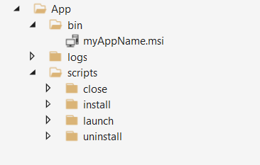

ما هو السكربت
لغة البرمجة النصية أو اللغة الممتدة هي لغة برمجة معدة للتحكم بتطبيق برمجي معين. عادة ما تعامل الأكواد النصية على أنها غير البرامج حيث أن البرامج تنفذ باستقلالية دون الحاجة إلى تطبيق برمجى معين.كما أنها مختلفة عن الأكواد الأساسية للبرنامج التي تعمل بداخله فهي في العادة تكون بلغة أخرى

×ما هو مبدأ عمله؟
نصوص تحتوي على قائمة من التعليمات التي يتم تنفيذها من قبل برنامج ما أو لغة برمجة معينة ليتم تحقيق العمل المراد منه. وبالتالي سوف يمنع المستخدمين للقيام بكثير من الخطوات للوصول إلى نتائج معينة أثناء تصفح موقع ما على شبكة الانترنت أو العمل على أجهزة الكمبيوتر.
×استخدامات السكربت Script:
تستخدم البرامج النصية Script لأتمتة وتنفيذ العمليات على الكمبيوتر. وقد ساهمت البرامج النصية بجعل بيئة شبكة الانترنت الكثير قابلة للاستخدام ومريحة وأكثر مرونة.
ويمثل كل سكربت Script نصوص تحتوي على قائمة من التعليمات التي يتم تنفيذها من قبل برنامج ما أو لغة برمجة معينة ليتم تحقيق العمل المراد منه. وبالتالي سوف يمنع المستخدمين للقيام بكثير من الخطوات للوصول إلى نتائج معينة أثناء تصفح موقع ما على شبكة الانترنت أو العمل على أجهزة الكمبيوتر.
×مزايا البرامج النصية Script:
- 1.مفتوحة المصدر ، مما يتيح للمستخدمين عرض وتحرير الملف إذا لزم الأمر.
- 2.لا يتطلب برامج تجميع للملف، ولكن في بعض الاحيان تكون ضرورية.
- 3.سهلة التعلم والكتابة.
- 4.من السهل أن تصديره وتحويله للعمل بين مختلف أنظمة التشغيل.
- 5.سهولة التطوير البناء, في بعض الشركات يتم كتابة النصوص كنموذج للبرامج الفعلية.
العودة الى الصفحة الرئيسية